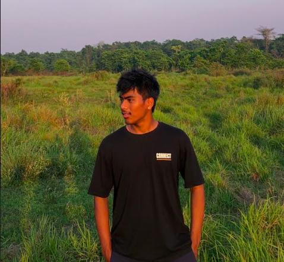

CURICULAM-VITAE |
|  |
| YUG TAMANG Phone: 9808820655 Email: tamangyug277@gmail.com Location: sunakothi , Lalitpur I am hardworking and passionate student currently pursuing BscIT at Islington College . Seeking to use my knowlege and skills later in the future to internship position provided by the college. |
|
SEE: United School, Lalitpur - January, 2015 to September, 2020 GPA: 3.75 Intermediate (+2): United College, Lalitpur - January, 2021 to September, 2022 GPA: 3.47 Bachelor 1stYear: Islington College, kathmandu - 2023 Studying, Present |
SKILLS: - Communication - team work |
LANGUAGE: - Nepali - English - Hindi |
REFERENCES: - Dr. Lal Rapacha - United College / Principal - 01-5537939 |